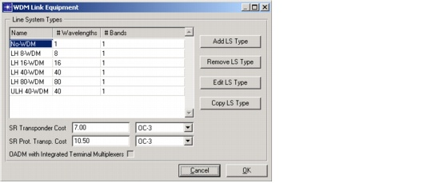
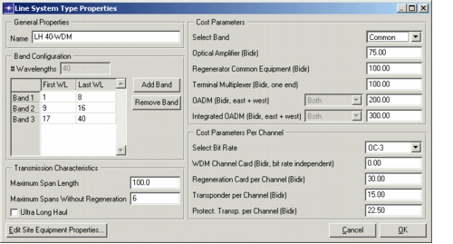

Creating a Baseline Scenario > Equipment Properties > WDM Link Equipment Properties
WDM Link Equipment Properties
You can use the WDM Link Equipment Properties dialog box (Network > Equipment Properties > WDM Link Equipment...) to add, remove, and edit the WDM line systems.
Figure 3-28 WDM Link Equipment Dialog Box

Procedure 3-8 Specifying WDM Link Equipment Properties
- Choose Network > Equipment Properties > WDM Link Equipment to open the WDM Link Equipment dialog box.
- Select the line system in the Line System Types table.
- Click the Edit LS Type button.
The Line System Type Properties dialog box appears.
Figure 3-29 Line System Type Properties Dialog Box

- Specify the Band Configuration options.
The band-configuration table lists the number of bands per system and the first and last wavelength per band. You can install wavelength bands to allow a more modular upgrade of capacity on the system.
You can define as many bands as you want for a specific line system. To add an extra band, click Add Band.
You can edit the last wavelength of the last band only. The total number of wavelengths (# Wavelengths) of the system is equal to the last wavelength of the last band. To remove the last band, click Remove Band.
- Enter data in the Transmission Characteristics section.
Note—This section appears dimmed and cannot be edited if one or more fibers in the network have been equipped with a WDM line system type.
- Enter data in the Cost Parameters section. This section enables you to define cost values for the equipment components per band. If only the first band of a system is used, only the cost values of this first band are counted. You can also set a "common" cost for the entire system, which is independent of the number of bands used.
- Select Band—The band whose cost parameters are being specified
- Optical Amplifier (Bidir)—A cost for the optical amplifier of the WDM system or a band
- Regenerator Common Equipment (Bidir)—A cost for the common equipment in a regeneration site
- Terminal Multiplexer (Bidir, one end)—A WDM terminal multiplexer cost counted at the end-points of the WDM system and at the regeneration sites
- OADM (Bidir, east + west)—A cost for an OADM of this WDM system or a band. The OADM components per band can be one of the following types:
- Integrated OADM (Bidir, east + west)—A cost for an integrated OADM (that is, an OADM that contains the WDM terminal multiplexers)
- Enter data in the Cost Parameters Per Channel section:
- Select Bit Rate—The bit rate whose cost parameters are being specified
- WDM Channel Card (Bidir, bit rate independent)—A bit-rate-independent WDM channel card, counted per channel at the WDM terminal multiplexer.
- Regeneration Card per Channel (Bidir)—A bit-rate-dependent regeneration card, counted per channel in the in-line regeneration sites.
- Transponder per Channel (Bidir)—A bit-rate-dependent, long-reach transponder card, counted per channel at the WDM multiplexer in opaque mode. In a transparent node, these long-reach transponders are used when adding/dropping traffic or for selective regeneration of transit traffic.
- Protect Transp. per Channel (Bidir)—A bit-rate-dependent, long-reach protection transponder card used for optical 1+1 protection at the tributary side of the OXC (in a transparent node).
- If desired, click Edit Site Equipment Properties to specify the physical characteristics of the system floor space and power supplies.
Note—The fields in the Site Equipment Properties dialog box appear dimmed and cannot be edited if one or more fibers in the network have been equipped with a WDM line system type.
End of Procedure 3-8
Other Link Equipment Options
In opaque mode, short-reach transponders (= gray interfaces) are used at the tributary sides of the OXC. The cost of these transponders is independent of the WDM line system and is specified in the WDM Link Equipment dialog box.
Besides options for specifying cost parameters for transponders, this dialog box includes the option "OADM with integrated terminal multiplexers". If this option is selected, the OADM terminates two fiber pairs at both trunk ports and no additional WDM terminal multiplexers are counted. If this option is not selected, the OADM uses wavelength ports at the trunk side, and SP Guru Transport Planner counts two additional terminal multiplexers at each side to multiplex/demultiplex the wavelengths. SP Guru Transport Planner counts wavelength ports at the tributary side regardless of whether this option is selected.
| Home © 1987-2007 OPNET Technologies, Inc. All Rights Reserved. This software may be covered by one or more U.S. Patents. See complete patent notice in the Legal Notices section. OPNET Support Center |